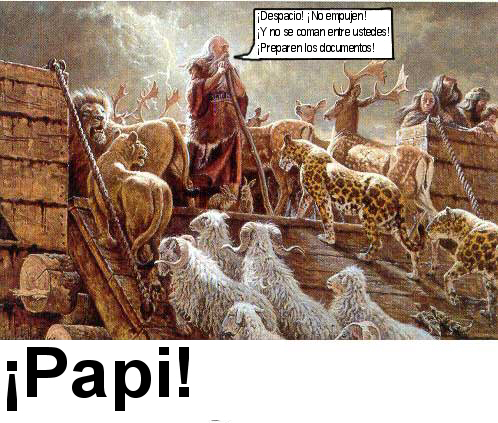
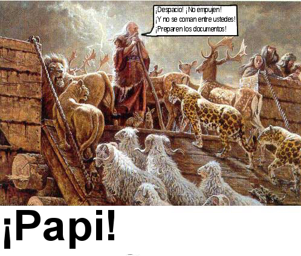
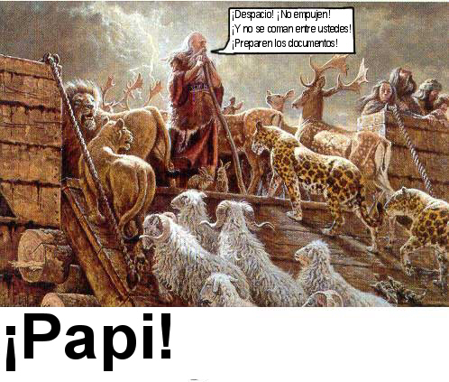

La historia de Adolf, teología sin fondos, las maravillas de Simanek, un brete en Tennessee, aceptación selectiva de la ciencia, dos lectores alarmados, Twain sobre la locura, sitios de la NCAHF, feng shui peligroso, la pirámide mágica, y una aventura en el Reino Unido… James Randi, traducido por Marcelo Huerta San Martín 15-08-2003 Comentarios Volver al comentario del 15 de agosto de 2003 Comentarios semanales de James Randi Comentarios Please enable JavaScript to view the comments powered by Disqus. Comments powered by Disqus
 

Comentarios
Comments powered by Disqus